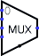

Multiplexexador
Multiplexexador
| Biblioteca: |
Plexers |
| Introdução: |
2.0 Beta 11 |
| Aparência: |
 |
Comportamento
Copiará uma entrada na face oeste para a saída na face leste;
qual das entradas será copiada é especificado pelo valor atual recebido através da
entrada na face sul. Acho útil pensar em um demultiplexador como análogo a um
comutador de trilhos em uma estrada de ferro, controlado por uma seleção feita à entrada.
(A propósito, algumas autoridades sugerem o termo em inglês
multiplexor, mas multiplexer
é a ortografia predominante.)
Pinos (componente supondo voltado para leste)
- Na face oeste, quantidade variável (entradas, com largura em bits de acordo
com o atributo Bits de Dados)
- Valores de dados, um dos quais será encaminhado para a saída.
Cada valor de entrada de dados é numerado, começando em 0 na face norte.
- Na face leste (saída, com largura em bits de acordo com o atributo Bits de Dados)
- O valor da saída irá coincidir com um dos valores das entradas na face oeste,
borda, aquele cujo número for o mesmo do valor atual recebido através da seleção de
entrada na face sul.
Se a selecção de entrada contiver algum bit não especificado (isto é, flutuante),
então a saída será totalmente flutuante.
- Na face sul (entrada, com largura em bits de acordo com o atributo Bits de Dados)
- Entrada selecionada: o valor dessa entrada determinará qual a entrada
na face oeste será roteada para a saída na face leste.
Atributos
Quando o componente for selecionado ou estiver sendo acrescentado,
os dígitos de '1' a '4' poderão ter o seu atributo Bits Selecionados
alterado,
Alt-0 até ALT-9 irão alterar o seu atributo Bits de Dados
,
e as teclas com setas poderão alterar o seu atributo Direção
.
- Direção
- A direção do componente (especificará qual a saída relativa à entrada).
- Bits Selecionados
- A largura em bits da entrada selecionada do componente na face sul.
O número de saídas para o multiplexador será
2 Bits Selecionados .
- Bits de dados
- Largura dos bits de dados que serão roteados pelo multiplexador.
- Tri-state?
- Especificará se as saídas não selecionadas deverão ser flutuantes (Sim) ou
zero (Não).
- Saída desabilitada
- Especificará qual deverá ser o valor de cada bit das saídas quando o
componente estiver desabilitado (ou seja, quando o pino de habilitação estiver
em 0). Opções incluem zero e flutuante; e neste caso, as saídas estarão
efetivamente desconectadas de quaisquer outras portas.
Comportamento da ferramenta Testar
Nenhum.
Comportamento da ferramenta Texto
Nenhum.
Voltar à Referência para bibliotecas